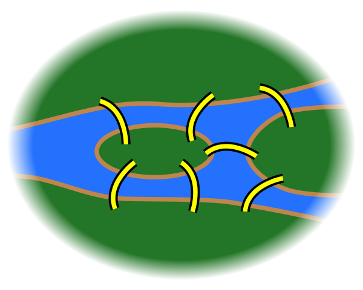

3 Simplicial complexes
“Are you a man, Octave? Do you see the leaves falling from the trees, the sun rising and setting? Do you hear the ticking of the horologe of time with each pulsation of your heart? Is there, then, such a difference between the love of a year and the love of an hour? I challenge you to answer that, you fool, as you sit there looking out at the infinite through a window not larger than your hand.”
— Alfred de Musset, in “The confession of a child of the century”
3.1 The infinite through a window
Topological spaces are nice, but all the interesting ones have an infinite amount of points: torus, circle, the real line, mobius band, projective plane, and so on. Topology usually is not interested in finite sets because their standard topology is trivial: just take every point as an open set.
We, as humans, can’t really grasp the infinite. Our universe is finite, and so ir our mind. To think about the infinite, we need to use finite “tricks”. Take, for example, the way we prove something is valid for all the infinite natural numbers, a principle called finite induction:
- first prove that a certain property \(P\) is true for 1;
- then, prove that if it is valid for \(n\), then it is also valid for \(n+1\).
Peano needed an axiom to guarantee that these 2 conditions are enough to prove that \(P\) is valid for all \(\mathbb{N}\).

As another example, when studying linear algebra we see the concept of basis of a vector space \(V\). With basis, we can describe exactly any point \(v \in V\) using a finite combination of its base elements, say \(v = \lambda_1 e_1 + \ldots \lambda_n e_n\). The infinite amount of points in \(V\) can then be written as sums of finite objects that we can map mentally.
Finding a finite representation of a mathematical object is often desired, and with topological spaces it was not different.
3.2 Graphs
Graphs were created by Euler in 1736 because he wanted to visit Königsberg but was too lazy2 to walk around like a normal person, and then tried to cross all its bridges just one time.

We can abstract away this map with its bridges and just think about the bridges and the portions of land:

Euler did even better! He needed just two things to represent this object:
- points: the portions of the cities;
- edges: bridges that connect two points.
The result is the following:
Oops, Euler just invented graphs!
Formally,
Definition 3.1 A directed graph is a pair \(G = (V, E)\) where \(V\) is a set called vertices and \(E \subseteq V \times V\) is a set of edges between the vertices. An element \((v, w) \in E\) can also be represented as \(v \to w\).
!!! falar sobre grafo indireto; usar {v, w} em vez de pares
He noticed that when you travel to a green point \(v\), you need to take another bridge to get out of \(v\). Thus, the number of edges need to be even for all the points we visit during the middle of our journey (excluding the beginning and the end). But all points in the above graph have an odd number of edges! Therefore, it is impossible to travel cross each bridge just once and still visit all the green points.
Graphs can be used whenever we need to represent a set of objects and a pairwise relation between these objects.
3.2.1 The essence of a circle
What is a circle, really? The boring answer is “the set of points that dist \(r\) of a point \(p\)”. But in a topological view, a circle is just a 1-dimensional closed real interval with its extremities glued together, forming a hole inside.
The following graph, when seen as a subset of \(\mathbb{R}^2\) is homeomorphic to a circle:
With this horrendous graph6 we can represent a circle in a finite way: three points \(a, b, c\) and all possible edges: \(a \to b\), \(b \to c\), \(c \to a\).
3.3 Simplicial complexes
Why stop with vertices and edges? Edges are just pairs of edges. Why not take triples and quadruples and so on?
Well, now you’ve reinvented simplicial complexes! Congratulations!
Definition 3.2 A simplicial complex \(\Sigma\) is a set of subsets of \(X\) with the following property:
- for any \(\sigma \in \Sigma\), every subset of \(\sigma\) (also called a face of \(\sigma\)) is also in \(\Sigma\);
- given non-empty \(\sigma_1, \sigma_2 \in \Sigma\), the intersection \(\sigma_1 \cap \sigma_2\) is also in \(\Sigma\).
!!!abstract simplicial complexes as approximation of other objects
!!!standard embedding
https://commons.wikimedia.org/wiki/File:Dominoeffect.png↩︎
The original text is in Latin, so I just invented this.↩︎
https://en.wikipedia.org/wiki/File:Konigsberg_bridges.png↩︎
https://en.wikipedia.org/wiki/File:7_bridges.svg↩︎
https://en.wikipedia.org/wiki/File:K%C3%B6nigsberg_graph.svg↩︎
See https://en.wikipedia.org/wiki/Monster_group for more terror tales in mathematics.↩︎